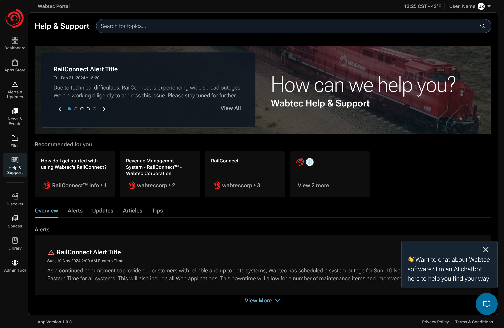
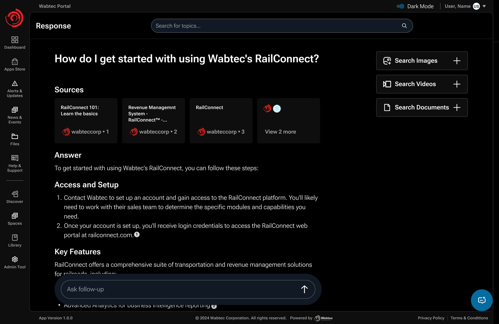
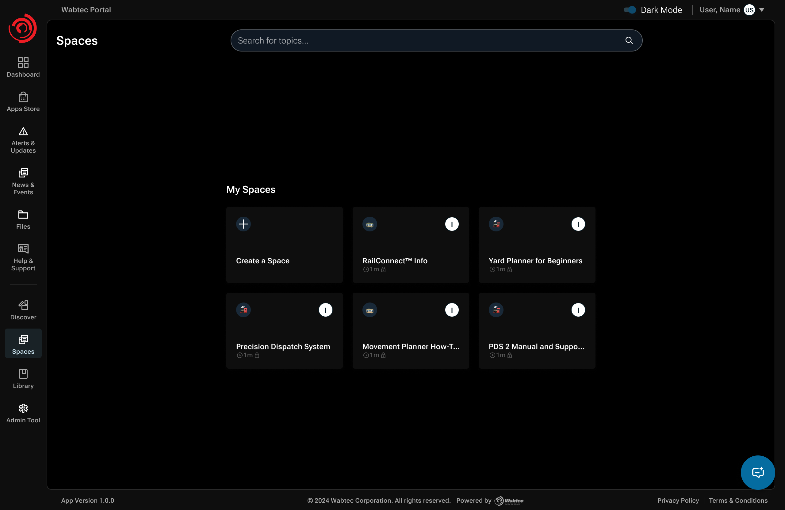
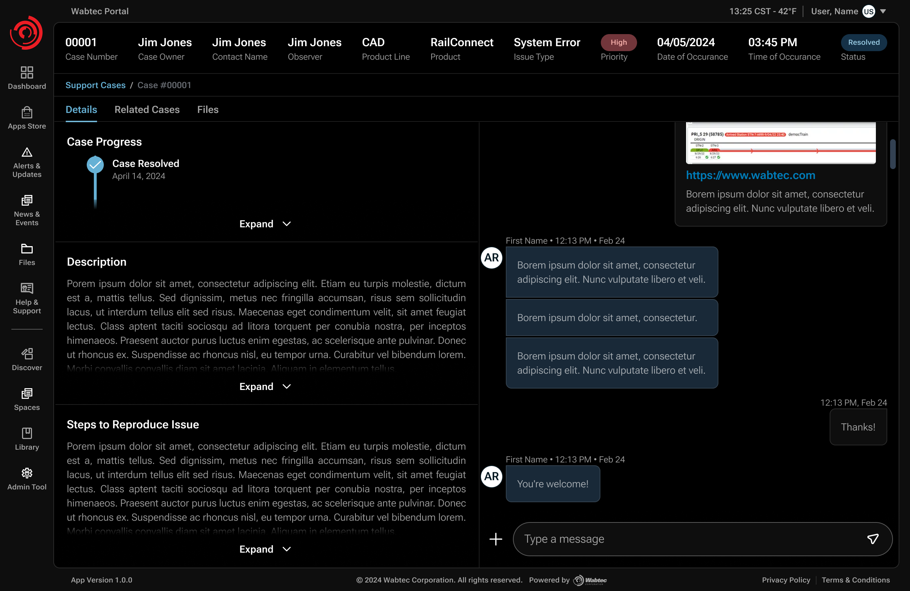

Designing an AI support system customers could trust.
Details
Role: Staff UX Designer
Product: Wabtec One customer portal
Partners: Product, engineering, support & research
Scope: UX strategy, interaction design & design-system application
Overview
Wabtec customers depended heavily on email and support agents to troubleshoot complex software. What began as an AI exploration and self-service case-creation request became a broader redesign of how customers found credible answers, resolved issues independently, and escalated when self-service wasn't enough.

The assignment
The brief left the support journey undefined.
The initial ask combined two ideas: explore AI for support, and make case creation self-service. But support leadership did not want a new form to simply replace email as the default path. Their larger goal was to reduce repetitive troubleshooting reaching agents in the first place.
Before / Email-led support
The customer assembles the request.
- Search across disconnected resources.
- Email support when guidance is hard to find.
- An agent interprets the issue and creates a case.
After / Connected support journey
The portal connects the next steps.
- Find guidance relevant to the product.
- Inspect the answer and its source material.
- Open a case when more help is needed.
Design question: How could we make escalation easy when customers genuinely needed help without making escalation the default behavior?
My responsibility
Define the journey and the knowledge it depended on.
I led discovery with support, engineering, and product SMEs; mapped knowledge and access constraints; and shaped the search, source-verification, and escalation flows through delivery.
Knowledge access
Useful AI depended on credible product knowledge and that knowledge was fragmented across products, systems, and owners.
Trust
Customers needed to know when an answer came from an authoritative source and when credible sources were not available.
Service continuity
Self-service had to reduce support burden without blocking customers who genuinely needed a human.
DISCOVERY / ORGANIZATIONAL REACH
The first design problem was finding the knowledge and the people who owned it.
There was no single source of truth for Wabtec product support. I worked through support leadership, product teams, documentation owners, and subject-matter experts to understand where guidance lived, who could validate it, and whether the AI layer could access it.
- Where knowledge lived
- SharePoint sites, product knowledge bases, Rally, and other product-specific documentation — with uneven coverage across products.
- Who owned it
- Support agents helped point me toward documentation owners and SMEs. In several cases I had to use my manager and the Director of Support to reach people who were otherwise difficult to access.
- What AI could retrieve
- I checked source feasibility with engineering. Some repositories could be exposed through APIs; others could not because of security, privacy, or access constraints.
- What customers should see
- Customers could only receive guidance tied to products they owned or were entitled to access, so permissions had to be part of the experience architecture.
This discovery changed the shape of the solution: instead of designing AI search against a presumed knowledge base, I had to design for fragmented sources, uneven authority, access constraints, and human validation.
SYNTHESIS / RESEARCH CHANGED THE ARCHITECTURE
Discovery shaped the support architecture.
Source access, ownership, and product permissions determined how the experience could work. Each finding led to a specific design response.
| Observation | Implication | Design response |
|---|---|---|
| Knowledge was distributed | No single AI-ready source existed | Hybrid API + SME-curated knowledge model |
| Some repositories could not be connected | Automation alone would leave gaps | Spaces for manual curation and preservation |
| Source authority varied | A fluent answer could still be unreliable | Role-based provenance and source visibility |
| Not everyone could author trusted guidance | Open contribution would weaken credibility | Authorized SME permissions and backend governance |
The resulting journey connected knowledge retrieval, source inspection, expert curation, and human support.
Design decision / Search over browsing
Customers shouldn't have to know where the answer lives.
Browsing a support page could surface only a fraction of the guidance customers needed. I made AI search the main route into distributed product knowledge, supported by product context and suggested questions. Case creation stayed available when self-service was not enough.

Design decision / Inspectable AI answers
Give customers a way to check the answer.
An AI response needed more than a confident tone. I kept citations and supporting sources close to the answer, surfaced source authority, and provided follow-up and escalation paths when guidance was incomplete.

TRUST MODEL / CALIBRATED, NOT BLANKET
- Role-based authority
- When knowledge was SME-curated, attribution could signal authority by role, for example, Wabtec subject-matter expertise, without making the customer depend on an individual's name.
- Visible uncertainty
- If no credible source was available, the experience needed to make that absence visible rather than presenting an AI answer with false certainty.
- Product entitlements
- Customers could only access guidance for products they owned or were authorized to use, keeping answers relevant and secure.
- Recovery path
- Suggested follow-up questions helped customers continue exploring; unresolved issues could still move into human support.
SYSTEM DECISION / SPACES + HUMAN VALIDATION
Spaces gave SMEs a way to fill knowledge gaps.
Some sources could connect through APIs; others required manual curation. Spaces let authorized SMEs add documents, review AI responses, and save useful answers as product knowledge. This made expert contribution part of the support system.
SYSTEM MAP / HYBRID KNOWLEDGE ARCHITECTURE
Where direct connectivity was possible, the system could retrieve automatically. Where it wasn't, authorized SMEs could curate and validate knowledge before it reached customers.
- API-accessible sources
- Wabtec AI layer
- Product-entitled answers
- SME-curated Spaces
- Human validation + provenance
- Trusted knowledge

SME WORKFLOW / FROM SOURCE TO TRUSTED KNOWLEDGE
Only predefined, authorized SMEs could contribute authoritative material. Permissions were configured in the backend by system engineers rather than exposed as an open contribution model.
- Authorized SME
- Add docs
- Ask / search
- Review AI response
- Validate
- Save to Space
Design decision / Context-preserving escalation
Don't make customers explain the same problem twice.
When self-service was not enough, customers could include links to their search threads in a case. Support agents could review what had already been explored, reducing the need to reconstruct the issue.
SERVICE FLOW / CONTEXT-PRESERVING ESCALATION
Search-thread links connected the case to the customer's earlier troubleshooting.
- Customer question
- AI answer
- Follow-up
- Unresolved
- Create case
- Agent receives context
The handoff was designed to reduce repetition for customers and give agents context before responding.


ORGANIZATIONAL INFLUENCE / RESOURCING THE KNOWLEDGE SYSTEM
The product could not work without changing who contributed to it.
Spaces only mattered if product experts could contribute and validate knowledge. That created an organizational constraint: executives were concerned about pulling SMEs away from their dedicated products and projects. I partnered with the Director of Support to connect the product argument to the operational cost of repetitive troubleshooting.
THE RESOURCING CASE
- Executive concern
- SMEs already had dedicated product responsibilities. Contributing support knowledge could look like an additional operational burden.
- My contribution
- I connected discovery findings to the product dependency: without authoritative product expertise, AI could retrieve information but could not reliably establish what should become trusted guidance.
- Evidence partner
- The Director of Support brought operational credibility and real support data into stakeholder conversations. That evidence was critical in showing the cost of repetitive support work.
- Result
- Leadership approved broader SME participation and access. I could interview additional experts, reach documentation that had previously been difficult to access, and feed better product knowledge into the system.
Design system / Platform consistency
Built on Volt 2.
I used Wabtec’s Volt 2 components, tokens, and theme support to keep search, source references, and case creation consistent with the wider platform.

{kind=link}
{kind=link}
{kind=link}
{kind=link}
{kind=link}
{kind=link}
{kind=link}
{kind=link}
{kind=link}
{kind=link}
{kind=link}
{kind=link}
{kind=link}
Shipped outcome
Support reported fewer email inquiries after launch.
The portal shipped. The Director of Support reported a substantial reduction in email troubleshooting inquiries; self-service cases did not replace that volume one for one.
- Reduced support demand
- Support leadership reported substantially fewer troubleshooting inquiries arriving by email after launch.
- Evidence of an upstream shift
- This pattern suggested that some needs were being met before escalation. It did not, by itself, establish a measured self-service resolution rate.
- Human support stayed reachable
- Customers could still create and track cases when self-service was not enough.
Reflection
The interface wasn't the hardest part.
The harder design problem was creating the conditions for a useful answer: credible knowledge, permissions, provenance, human validation, and a recovery path when AI could not resolve the issue.
Validation and next questions
I used informal sessions with SMEs and support agents, limited customer feedback, and later internal testing. Next, I would measure whether customers can verify sources, find escalation when needed, and pass useful context to agents.